5' 10" · A hip-hop karaoke MC in his late twenties who treats the bar like a festival crowd; the roster's widest fighter. Very wide and kinetic, standing upright and level like the rest of the roster, with weight even over both feet; never narrow, never crouched or deeply coiled. His recognition cues are a straight flat-brim cap worn level over close-cropped hair, an oversized puffer mass, an upright level stance, chunky trainers, and a small shoulder towel, all readable without facial detail; the brim is rigid and never curved. He wears an oversized indigo puffer jacket with readable horizontal baffles, a plain white tee, loose black track pants with an indigo side stripe, chunky white high-top trainers, and one small folded performance towel over the rear shoulder. He holds one wireless handheld microphone low and forward in his character-right hand; no cord, stand, chain or branded accessory. His ready stance is festival-crowd MC energy carried upright: standing tall and square with knees only lightly flexed, feet planted wide, shoulders level, spine vertical — the energy is in the width and the arms, not in a crouch. Palette, as base/shadow/highlight per material: dark #20232B / #101217 / #3A3E48; white #F1EEE5 / #BDB9AE / #FFFFFF; metal #6F747C / #34383E / #B5BAC0; indigo #1D4EF1 / #102B91 / #5578FF; skin #8E5138 / #563020 / #B87250; cap #171A24 / #090B10 / #34394A; towel #D8D4C8 / #99958B / #F7F3E7. Never draw: curved cap brim; gold chains, grills, or cash; gang-sign hand shapes; narrow jacket; a crouched, coiled or low-slung stance; a forward-hunched torso; microphone cable, stand, or duplicate microphone; brand marks or legible text; narrow fitted jacket; corded microphone or microphone stand.
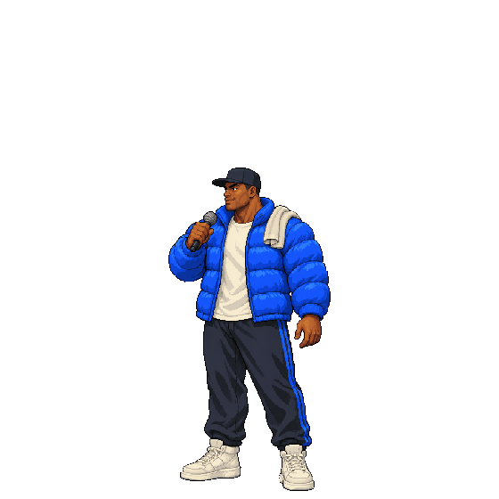
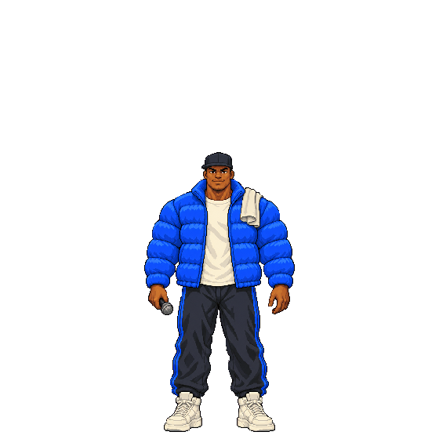
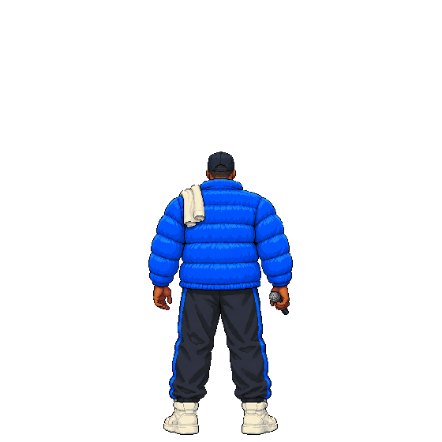
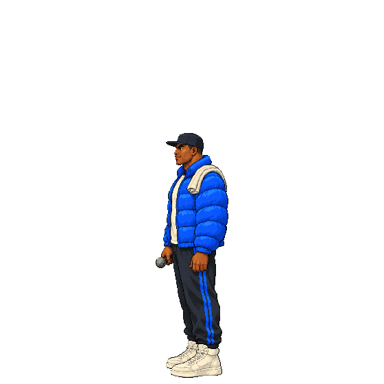
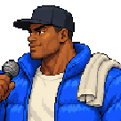
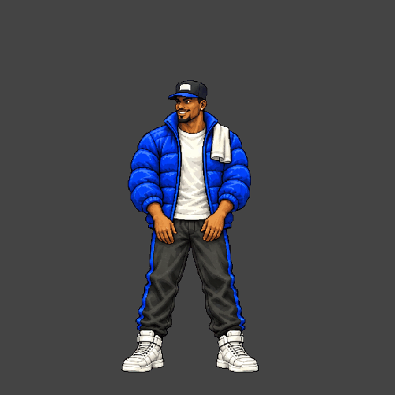
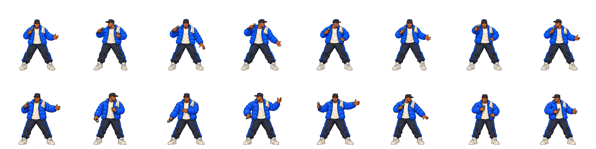
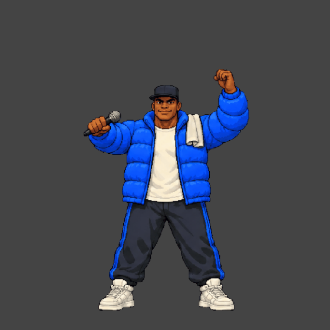
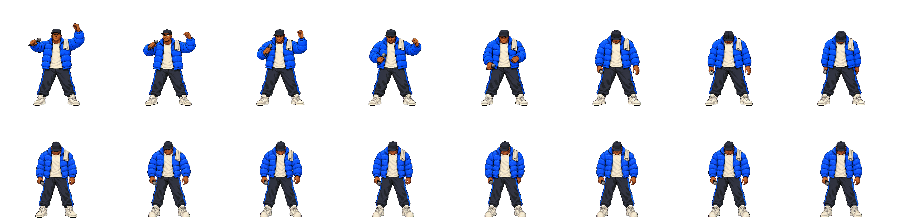
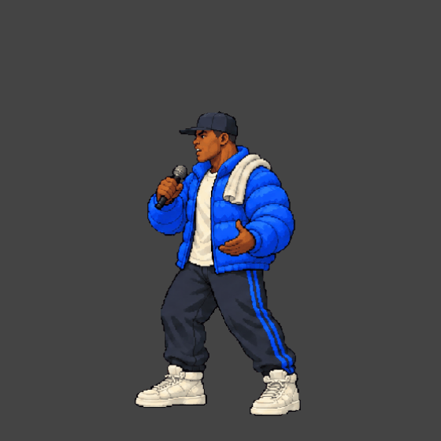
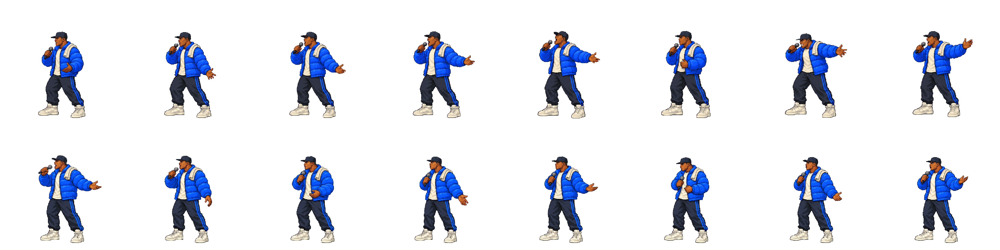
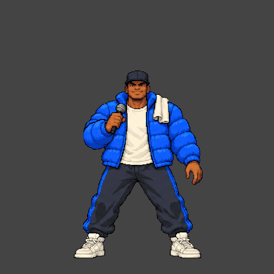
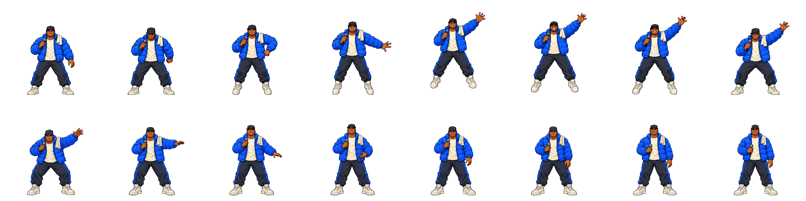